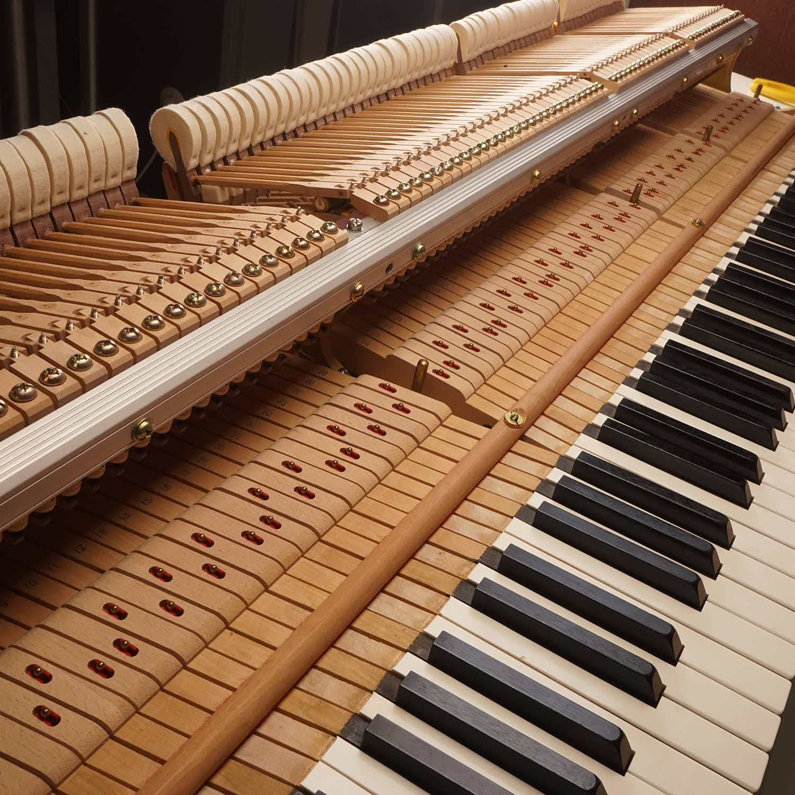
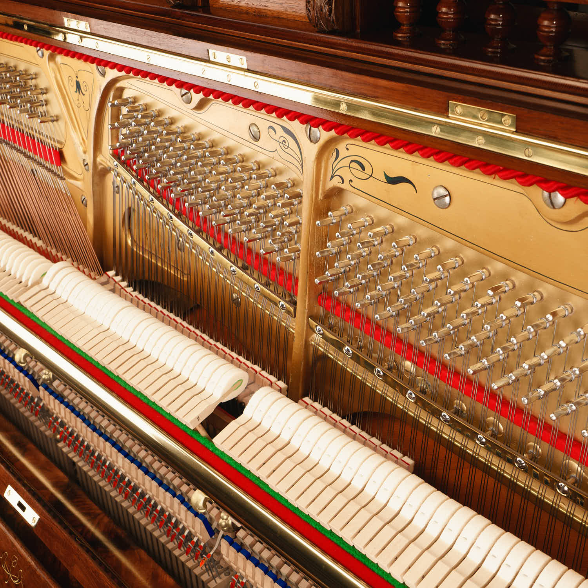

Pedalwechsel am Klavier: C-Dur und F-Dur sauber verbinden
Wenn beim Akkordwechsel alte Töne in die neue Harmonie hineinragen, hilft mehr Pedal nicht weiter. Entscheidend ist der kurze Moment, in dem die Dämpfer den bisherigen Klang löschen und die Finger den neuen Akkord bereits halten. Mit zwei Dreiklängen lässt sich dieser Ablauf getrennt von einem schwierigen Musikstück üben.
Zuerst verstehen, was das rechte Pedal hält
Am akustischen Klavier hebt das rechte Pedal die Dämpfer von den Saiten. Deshalb kann ein Ton weiterklingen, obwohl die Taste schon losgelassen wurde. Solange die Taste selbst gedrückt bleibt, wird ihre Saite ebenfalls nicht gedämpft. Das ist der Grund, warum beim Pedalwechsel die Finger den neuen Akkord halten müssen.
Das Pedal verbindet Klänge, es ersetzt keine bewusste Fingerbewegung. Spiele die folgende Folge zuerst ohne Pedal, damit du den Klang jedes Dreiklangs einzeln kennst. Verwende das mittlere Register und eine bequeme Lage; lautes Spiel ist für diese Übung nicht nötig.

Zwei Akkorde und ein langsamer Puls
Spiele mit einer Hand C–E–G und danach F–A–C. Gemeint sind die drei Töne gleichzeitig, nicht nacheinander. Wähle Lagen, die deine Hand ohne Dehnen erreicht. Ein Metronom bei etwa 50 bis 60 Schlägen pro Minute kann helfen: C-Dur auf Zählzeit eins, F-Dur auf Zählzeit drei, danach wieder C-Dur. Wenn der Handwechsel noch unsicher ist, lasse das Metronom zunächst weg.
Die rechte Ferse bleibt auf dem Boden, der vordere Fuß liegt auf dem rechten Pedal. Hebe zum Lösen nicht das ganze Bein an. Wenn du das Pedal nur durch Vorrutschen oder Anlehnen erreichst, muss zuerst die Sitz- oder Pedalhöhe passend eingerichtet werden.
Der Wechsel besteht aus drei getrennten Bewegungen
Schlage C–E–G an und drücke danach das Pedal. Löse die Hand, während der Akkord durch das Pedal weiterklingt. Lege die Hand für F–A–C bereit.
Schlage den F-Dur-Akkord an und halte seine Tasten mit den Fingern. Lasse unmittelbar danach das Pedal kurz zurückkommen, sodass der alte Klang gelöscht wird. Drücke es wieder herunter, während die F-Dur-Tasten noch gehalten werden. Erst dann darf die Hand zum nächsten Akkord wechseln.
Verlangsame den Ablauf zunächst so weit, dass Anschlag, Lösen und erneutes Treten erkennbar getrennt sind. Es geht dabei um die Reihenfolge, nicht um ein vorgeschriebenes Millisekundenintervall. Mit sicherer Koordination wird der Wechsel kleiner und flüssiger.
So erkennst du einen zu frühen oder zu späten Wechsel
Hörst du vor F-Dur ein Loch, hast du den C-Dur-Klang wahrscheinlich gelöscht, bevor die neue Harmonie da war. Halte den alten Klang bis zum neuen Anschlag. Hörst du dagegen nach dem Wechsel weiterhin das alte E neben dem neuen F, kam das Lösen zu spät oder das Pedal nicht weit genug zurück.
Prüfe beides getrennt. Spiele einmal absichtlich mit einer Pause und einmal mit stehenbleibendem Pedal, um die Unterschiede kennenzulernen. Kehre dann zum sauberen Wechsel zurück. Eine kurze Aufnahme aus dem Raum hilft: Beim Spielen wird eine Klanglücke leichter überhört als beim anschließenden Abhören.
Eine klare Grenze zwischen Spieltechnik und Instrument
Lasse zum Schluss Hand und Pedal vollständig los. Klingen einzelne Töne im mittleren Register auffällig weiter, notiere die betroffenen Tasten und ob das Problem auch ohne Pedal auftritt. Eine hängende Taste oder unzureichende Dämpfung wird durch schnelleres Treten nicht behoben. An Stellschrauben oder der Pedalmechanik muss für diese Beobachtung nichts verändert werden.
Die Übung trainiert einen grundlegenden harmonischen Wechsel. Wie viel Pedal ein Musikstück verträgt, hängt auch von Stil, Instrument und Raum ab. Übertrage deshalb die Bewegungsfolge auf das Stück, aber nicht automatisch dieselbe Pedaltiefe auf jede Passage.
